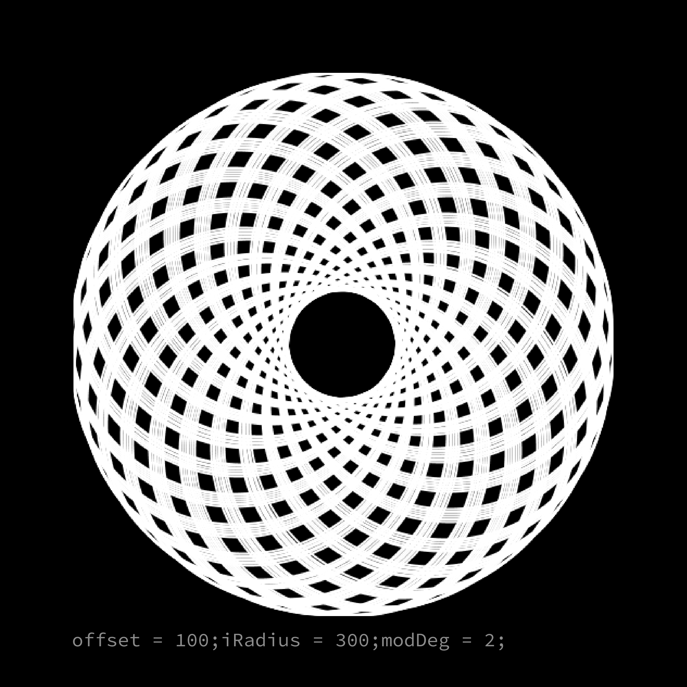
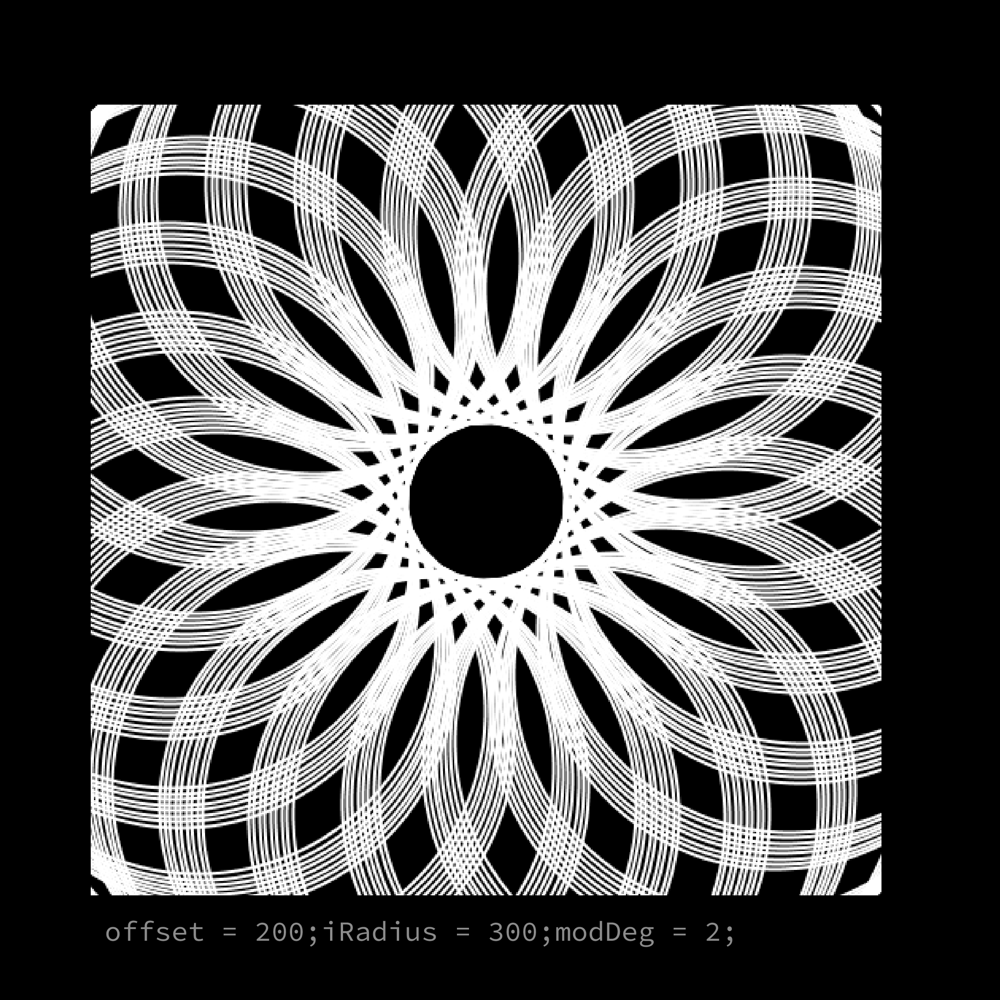
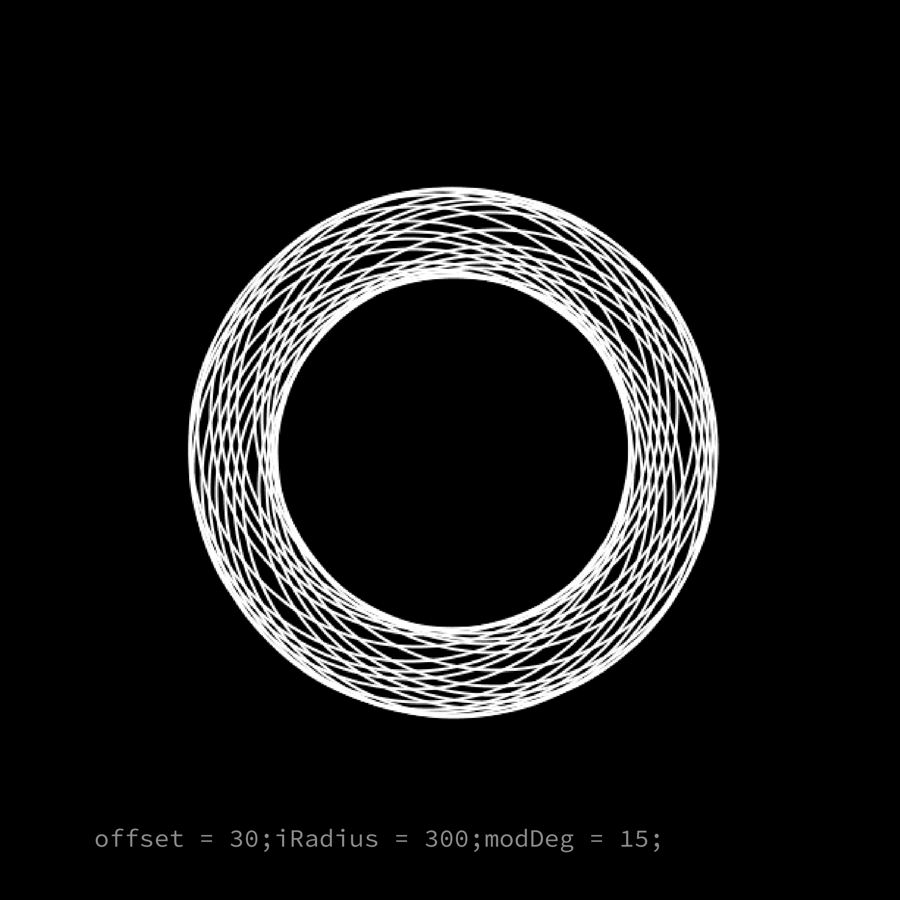
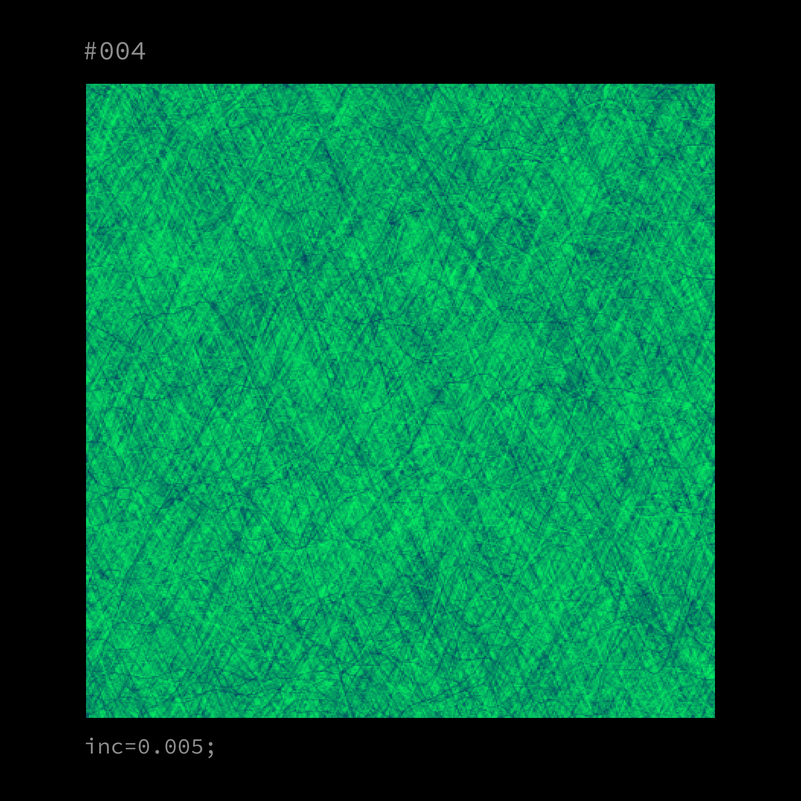
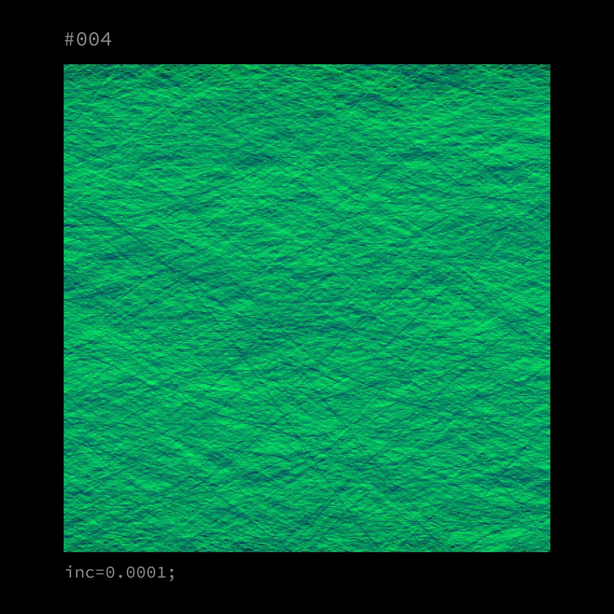
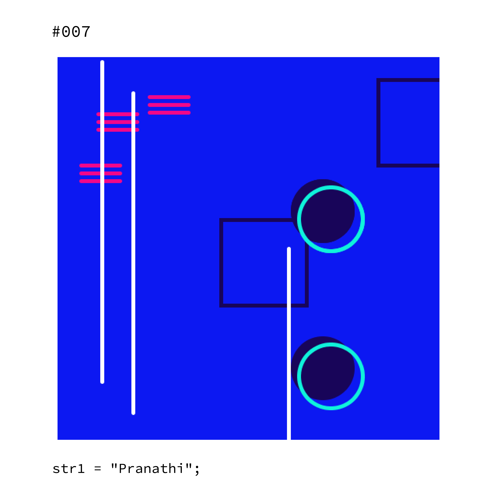
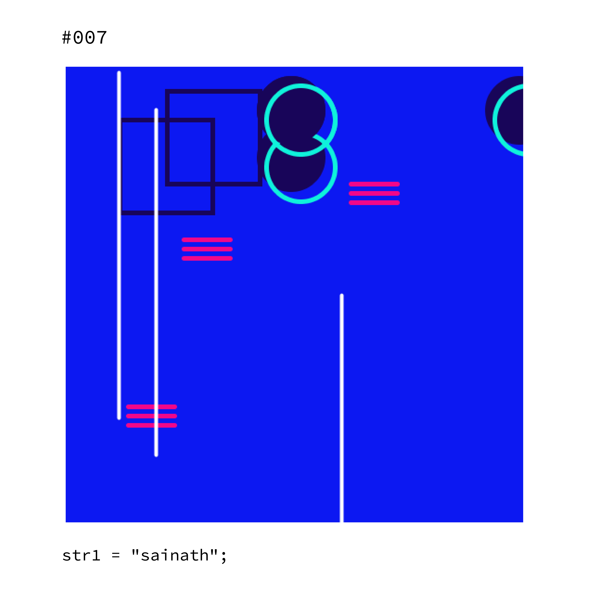
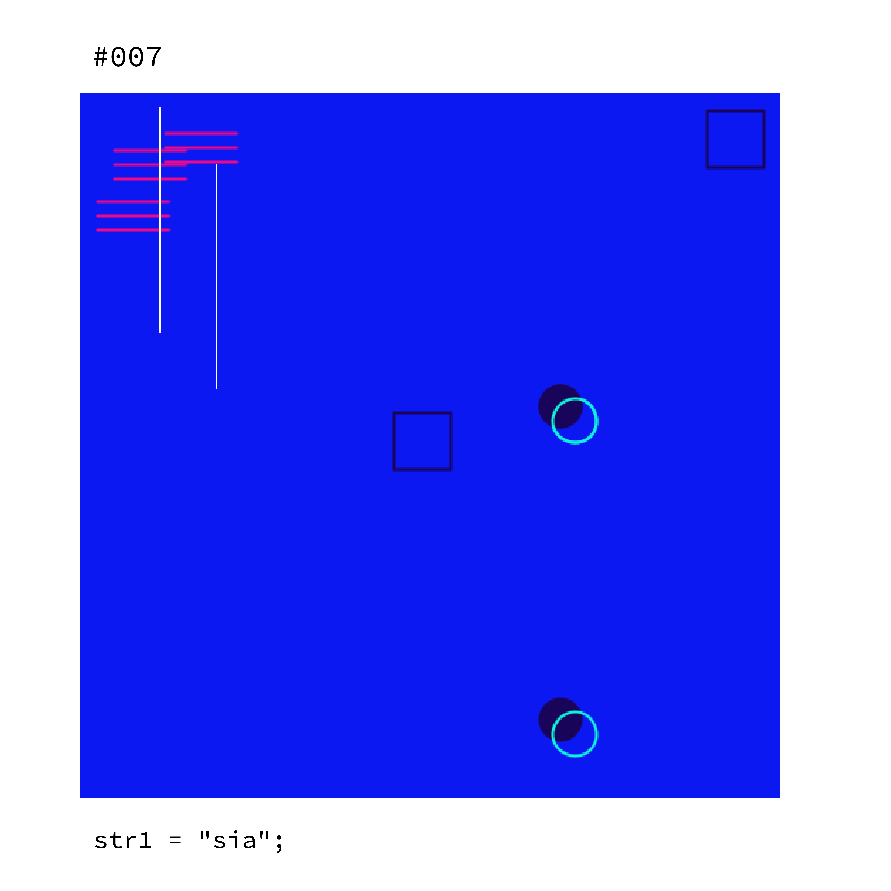

Generative Art
An exploration of generative art creating computational designs using processing.js
Overview
I’ve recently started learning computational design and generative art. Turns out, I have a bit of a knack for it - having an education in information technology, coding has always been a part of me. I see a future where I can work on this unique field with a combination of design and coding.
The following are experiments playing around with processing.js. I focused on a few drawing essentials including shapes, fills, and strokes, using the mouse position on the canvas to determine the height and width of the shapes being drawn. Few of these projects are interactive with the mouse moment which has been recorded.
You can try the sketches: here
Generating patterns with sin() function
Challenge:
The pattern is created by looping multiple circles. The challenge was to generate a new pattern with a change in the parameters.



Creating texture with code
Challenge:
The texture is generated with the concept of perlin noise.



Generating patterns with name as input
Challenge:
To generate a pattern based on name as input. The composition of the pattern changes based on the length of the name and the total value of the name calculated.



Mouse/Touch interaction: Eye movement
Challenge:
To make the eye movement with the interaction of the sketch.
You can try the sketch: here